Data publicării: 20.12.2019
Autor articol: Adrian Iftene
Introducere
Ce este fibrilația atrială? Fibrilația atrială este o tulburare de ritm cardiac (aritmie) care face ca inima să bată neregulat.
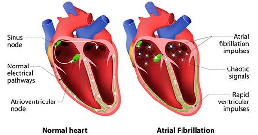
Inima este împărțită în 4 camere (2 atrii și 2 ventriculi), iar două dintre ele formează inima dreaptă, care pompează sânge către plămâni. Pomparea este coordonată de o rețea de conexiuni electrice, inițiate de pacemakerul (numit nod sinusal), care face ca inima să se contracte regulat. În fibrilația atrială pacemakerul nu mai funcționează cum ar trebui, producând semnale electrice neregulate. Se ajunge la situația în care atriile nu se contractă cum ar trebui, fluxul sanguin încetinește sau stagnează, iar ventriculii se contractă neregulat (Vezi Figura 1).
După cum se poate observa în Figura 2, pe ECG este vizibilă diferența dintre comportarea normală a inimii (în stânga) și comportarea neregulată a inimii în cazul fibrilației atriale (în dreapta).
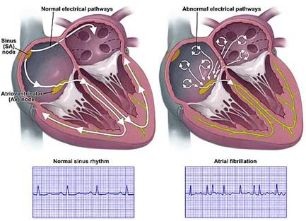
Fibrilaţia atrială (FA) este cea mai frecventă tulburare de ritm cardiac ce afectează milioane de oameni. Numărul de bolnavi este continuă să crească de la an la an atât în Europa cât şi în America (Camm et al., 2010).
Cauzele FA sunt multiple (Working Group FA, 1993):
- Cele mai frecvente: cardiopatia ischemică, hipertensiunea arterială, insuficienţa cardiacă, valvulopatiile.
- Alte cauze mai rare: boli congenitale, disfuncţii tiroidiene, obezitatea, sleep apnea, boli pulmonare cronice, diabetul zaharat, insuficiență renală.
- FA poate apare şi după intervenţiile chirurgicale pe torace şi mai ales pe inimă.
O perioadă de timp, FA era denumită fibrilaţie paroxistică şi fibrilaţie atrială cronică. Mai apoi au fost recomandate şi alte clasificări, iar recent Societatea Europeană de Cardiologie a venit cu următoarea propunere de clasificare (Camm et al., 2010):
- Primul diagnostic sau prima descoperire, indiferent de durata sau prezenţa /absenţa simptomelor.
- Fibrilaţie atrială paroxistică, ce se termină spontan în mai puţin de 7 zile, de obicei 24 ore.
- Fibrilaţia atrială persistentă, ce nu se termină în 7 zile. Necesită tratament farmacologic sau electric.
- Fibrilaţia atrială permanentă, durează peste 1 an, iar tratamentul vizând conversia nu a avut efect sau nu s-a încercat.
Prevalența fibrilației atriale cu vârsta se poate observa în Figura 3, conform studiului Anticoagulare și factorii de risc în studiul fibrilației atriale (Schmid et al., 2011). Numerele reprezintă numărul de bărbați și femei cu fibrilație atrială în fiecare categorie de vârstă. Se poate observa că bărbații sunt mai predispuși la această boală în comparație cu femeile. De asemenea, odată cu creșterea vârstei cresc și șansele de a face fibrilație atrială, atât la bărbați, cât și la femei.
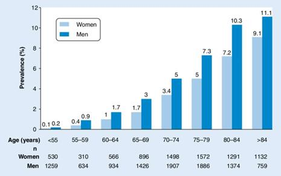
Electrocardiograma
Miocardul generează un câmp electric, care se propagă până la suprafaţa pielii. De aici, câmpul electric poate fi înregistrat prin plasarea unor electrozi în anumite puncte ale corpului uman. Graficul care rezultă din această înregistrare se numeşte electrocardiogramă (ECG). Electrocardiograma reprezintă înregistrarea grafică a variaţiilor de potenţial electric care iau naştere în timpul activităţii cardiace.
O electrocardiograma oferă informaţii despre:
- Ritmul inimii;
- Originea impulsului şi propagarea (conducerea) acestuia prin masa miocardului;
- Mărimea cavităţilor cordului;
- Poziţia inimii;
- Extensia şi localizarea unui infarct acut de miocard (IMA);
- Efectele modificării concentraţiei electroliţilor asupra proprietăţilor miocardului;
- Efectele unor medicamente asupra activităţii cordului;
- Funcţionarea unui pacemaker artificial implantat unui pacient;
- Reprezintă “standardul de aur” pentru diagnosticul tulburărilor de ritm şi de conducere.
Un traseu ECG este format din unde, segmente şi intervale (vezi Figura 4):
- unda P;
- segmentul Pq;
- complexul qRs;
- segmentul S-T;
- unda T;
- intervalul qT; +/- unda U.
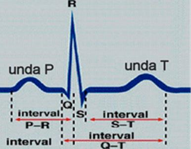
Tehnici bazate pe inteligență artificială folosite în detectarea fibrilației atriale
În ultimii ani inteligența artificială a început să fie din ce în ce mai folosită în multe domenii, inclusiv domeniul medical. Asistăm la o adevărată revoluție în medicină iar învățarea automată, rețelele neuronale, IoT (Intenet of Things), nanotehnologiile vin să ajute pe de o parte doctorii (în a decide mai argumentat asupra unui diagnostic sau tratament) și asistentele din spitale (în a monitoriza mai ușor pacienții), iar pe de altă parte pacienții (care beneficiează de tratamente personalizate adaptate lor și bolii pe care o au) și familiile acestora (care pot ajuta în procesele de tratare și de recuperare a bolnavilor) (Burlacu et al., 2019).
Algoritmi genetici
Algoritmul genetic (GA) utilizat în lucrarea (Arotăriței și Rotariu, 2015) a folosit o funcție fitness care avea un obiectiv unic: obținerea unor valori mai mari pentru sensibilitate și sensivitate. Metoda propusă de autori a fost testată folosind baza de date pentru fibrilație atrială Physionet MIT-BIH, iar rezultatele experimentale au relevat o bună precizie a detectării AF în termeni de sensivitate și specificitate (peste 90%). Parametrii folosiți de algoritmul genetic din lucrarea (Arotăriței și Rotariu, 2015) au fost:
- L – lungimea ferestrei,
- Pth1 – pragul de unde segmentul este considerat ca reprezentând AF (număr de segmente AF/număr de segmente totale),
- RMSt – pragul RMSSD (Root Mean Square of Successive Differences),
- TPRt – pragul al punctului de cotitură,
- SEt – pragul entropiei Shannon,
- TKt – prag al energiei Teager-Kaiser.
În (Arotăriței și Rotariu, 2015), cromozomul a fost inițializat cu o valoare întreagă între 32 și 480, iar funcția obiectiv își propune maximizarea a două valorilor Se (Entropia Shanon) și Sp (lungimea ferestrei în care avem AF). Algoritmul începe cu o populație de 50 de indivizi și după 40 de iterații se oprește furnizând soluția. Funcția multiobiectivă este în acest caz minimizarea ambelor funcții 1-Se și 1-Sp. Rezultatele obținute sunt Se = 0.9017 și Sp = 0.9012, sunt comparabile cu soluțiile similare, dar vine cu avantajul ca utilizează un număr mai mic de fișiere. În Figura 5 putem observa modul în care a fost construit un cromozom în lucrarea (Weng et al., 2017), bazat pe vârsta pacienților.
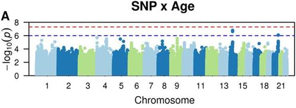
Metode de clasificare a AF
Dintre metodele din zona inteligenței artificiale folosite pentru clasificarea AF, amintim clasificările folosind Naive Bayesian, SVM, kNN, ANN și LDA (Lim et al., 2016), pe care le vom detalia în continuare. Clasificarea AF se face folosind morfologia undei P (Sahoo et al., 2011):
- Amplitudinea undei P,
- Zona sub unda P,
- Lățimea undei P,
- Distanța de timp a debutului undei P până la apogeul acesteia,
- Distanța de timp dintre vârful P și vârful R.
Naive Bayesian – În (Pourbabaee și Lucas, 2008), autorii au propus trei clasificatori diferiți pentru a identifica AFIB care se bazează pe kNN (K nearest neighbor), ANN (Artificial neural network) și Naive Bayesian. Ei au aratat că printre clasificatorii pentru AF, kNN oferă cea mai mare precizie de detecție a AF cu o precizie de 93,75% în comparație cu ANN și Naive Bayesian, care au precizii de 87,50% și, respectiv, 75,00%. În lucrarea (Joy et al., 2013), autorii au propus un model combinat dintre Naive Bayesian și Gaussian (GMM) pentru clasificarea AF. Ei au arătat că GMM oferă o performanță ușor mai mare în sensibilitate, specificitate și exactitatea în comparație cu Naive Bayesian, obținând o precizie de 99,00% și mai mare.
K nearest neighbor (kNN) – Mai mulți cercetători au arătat prin experimente că cel mai simplu clasificator, kNN, este capabil să clasifice AF cu o precizie mai bună în comparație cu alți clasificatori cu același set de caracteristici (Padmavathi și Ramakrishna, 2015). Aceștia au aratat că preciziile SVM și kNN sunt de 92,30% și, respectiv, de 100%, cu aceleași caracteristici extrase prin utilizarea metodei Burg. Rezultate similare sunt prezentate și-n lucrările (Pourbabaee și Lucas, 2008), (Prasad et al., 2013) și (Ros et al., 2004). Pașii de bază din kNN pot fi văzuți în Figura 6 de mai jos.
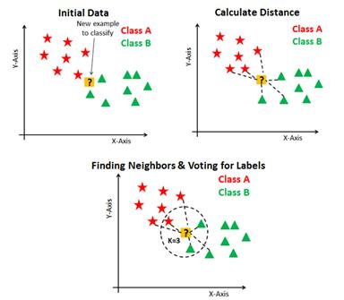
Artificial neural network (ANN) – Similar cu alte clasificatoare, ANN are atât faza de antrenare, cât și faza de testare. În faza de antrenare, o rețeaua neuronală este antrenată folosind un algoritm de propagare înapoi. Ca rezultat, pentru fiecare nod din rețea de pe fiecare strat se calculează și se obțin cele mai bune ponderi (Rumelhart et al., 1986), (Bre et al., 2018). Aceste ponderi sunt alese în funcție comportamentul celei mai bune rețele și mai apoi sunt utilizate pentru clasificarea în faza de testare. În perioada 1994-2013, ANN a fost utilizat pe scară largă pentru algoritmul de detectare a AF. Cele mai importante rezultate au fost obținute în 1994 de (Yang et al., 1994), care au obținut o precizie în jur de 92%, iar mai apoi în 2007-2008, (Chesnokov et al., 2007) și (Kikillus et al., 2008) care au obținut o precizie în jur de 93%, iar în 2018, (Bre et al., 2018) au obținut o precizie în jur de 99%. Din 2019, au început să fie folosite rețele neuronale convoluționale (Attia et al., 2019) a căror precizie începe să fie din ce în ce mai bună (99%).
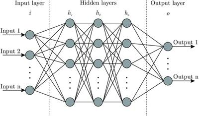
Support vector machine (SVM) – Majoritatea algoritmilor de detecție a AF cu clasificator SVM sunt capabili să ofere o performanță bună. În (Asgari et al., 2015), autorii prezintă un algoritm SVM care este capabil să detecteze AF cu precizie de 97%, iar în (Jeon et al., 2014) soluția SVM prezentată are o precizie de aproximativ 95%. În (Bruser et al., 2011) și (Padmavathi și Ramakrishna, 2015), autorii au folosit metoda Burg pentru extragerea caracteristicilor și au oferit o performanță bună de peste 95%. Vezi arhitectura unui sistem bazat pe SVM în Figura 8 de mai jos.
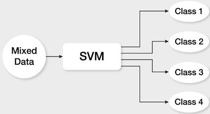
Linear discrimination analysis (LDA) – În lucrarea, (Lee et al., 2006) AF a fost clasificat de LDA pe baza undei F și a intervalului RR cu evaluare clinică, obținând o precizie de peste 92%. În timp ce autorii din (Chong et al., 2013) au folosit LDA pentru clasificarea AF și au implementat algoritmul pentru un telefon inteligent, cu o precizie de peste 96%. În Figura 9 putem vedea înainte și după clasificarea cu LDA.
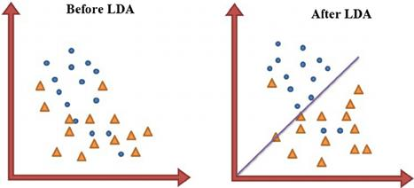
Dispozitive moderne pentru identificarea AF
Telefoane inteligente – Autorii din lucrarea (Krivoshei et al., 2016) prezintă un set de experimente pe care aceștia le-au făcut și în care au folosit un iPhone 4S. Telefonul era poziționat cu obiectivul camerei și lumină LED pe vârful degetului arătător (vezi Figura 10 de mai jos) pentru a prelua semnalul. Pentru a identifica pacienții cu AF au folosit mai multe metode statistice. Experimentele realizate pe 80 de pacienți au arătat o precizie de peste 95% a metodelor propuse. În 2017, (Lahdenoja et al., 2017) folosesc accelerometrul și giroscopul de pe un telefon inteligent cu Google Android pentru a identifica AF și obțin o precizie de peste 97%.
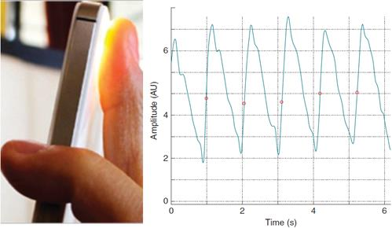
Camere video – În (Corino et al., 2017), autorii au folosit o cameră video profesională (cu o rezoluție de 659 x 494 pixeli) pentru a colecta filmulețe de 3 minute de la 24 de pacienți. Camera era poziționată la 1.5 m de pacient și prelua filmulețul pe toată durata experimentelor. Apoi filmulețele erau prelucrate parcurgând următorii 3 pași: (1) identificarea feței, (2) mișcarea pacientului și (3) extragerea semnalului. Rezultatele obținute au avut o precizie în jur de 0.96%. În lucrarea (Hewitt, 2013), autorul prezintă un set de experimente realizate la MIT, care prin amplificarea mișcării capului ajunge să obțină pulsul inimii, și apoi să identifice comportamentul anormal precum în cazul AF (vezi Figura 11 de mai jos).
Această secțiune are ca scop conturarea unui potențial cadru de colaborare între mediul academic și industrie. Astfel, în această secțiune veți găsi anunțuri de finanțări sau proiecte existente propuse și implementate la nivel național/internațional din domeniile relevante pentru transferul de cunoștințe identificate.
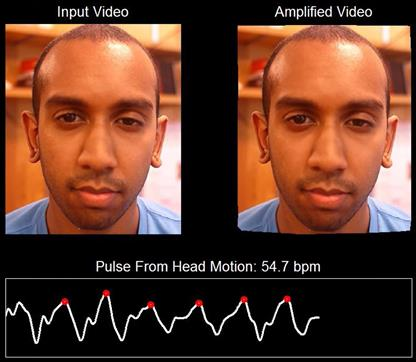
Smart Watch – Ceasurile inteligente încep să aibă din ce în ce mai mulți senzori care ne permit să monitorizăm starea de sănătate a celor care le poartă. În (Grieten et al., 2017) cu ajutorul unui smart watch (E4, Empatica), care măsoară semnalul fotopletismografiei (PPG) la încheietura mâinii și a unui iPhone 5S, care măsoară același semnal la nivelul degetului arătător, au făcut experimente pentru a vedea acuratețea acestora în comparație cu un dispozitiv implantat (vezi Figura 12).
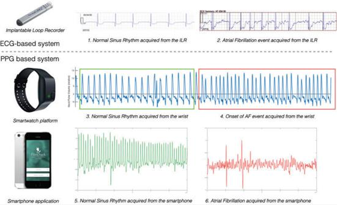
În prezent pe site-urile Amazon se găsesc o multitudine de dispozitive care permit monitorizarea bătăilor inimii și care semnalează AF (vezi Figura 13 de mai jos). Ele au ca scop să ajute pacienții, care acum își pot monitoriza activitatea inimii fără a fi nevoie să se deplaseze de fiecare dată la un specialist. Diferența între ele este de preț și de acuratețe a datelor preluate de la pacient.
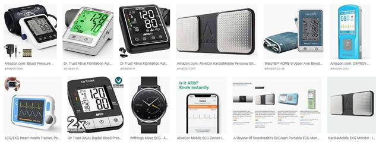
Concluzii
Fibrilația atrială este o tulburare de ritm cardiac, care face ca inima să bată neregulat. Pacienții care au această tulburare au un flux sanguin încetinit, iar ventriculii se contractă neregulat. Cu ajutorul unui ECG se pot diagnostica aceste tulburări, iar algoritmii de inteligență artificială pot descifra conținutul acestora și pot face clasificări cu o precizie foarte bună. Abordările din ultimii ani au la bază algoritmi genetici, și metode de clasificare precum Naive Bayesian, SVM, kNN, ANN și LDA.
Dispozitivele moderne apărute în ultimii ani permit colectarea de date de la pacienți și pot avertiza și semnala situațiile problematice. Telefoanele inteligente, camerele video, smartwatch-urile și dispozitivele speciale de pe Amazon, pot face un ECG cu o precizie destul de bună și pot semna anomalii, care trebuiesc analizate mai în detaliu de către un medic specialist.
Metodele propuse și dispozitivele apărute au ca scop să ajute medicul specialist prin semnalarea situațiilor anormale care se întâlnesc la pacienții săi și astfel îndreptând atenția acestuia spre situațiile critice, care necesită intervenție imediată. De asemenea, acestea ajută și pacienții care nu mai sunt nevoiți să vină de fiecare dată la spital, pentru a-și face analizele.
Referințe bibliografice
- Asgari, S., Mehrnia, A., Moussavi, M. (2015) Automatic detection of atrial fibrillation using stationary wavelet transform and support vector machine. Comput Biol Med [Internet]. 2015; 60: 132-142. Available from: http://www.sciencedirect.com/science/article/pii/S0010482515000839.
- Attia, Z., Noseworthy, P., Lopez-Jimenez, F., Asirvatham, S., Deshmukh, A., Gersh, B., Carter, R., Yao, X., Rabinstein, A., Erickson, B., Kapa, S., Friedman, P. (2019) An artificial intelligence-enabled ECG algorithm for the identification of patients with atrial fibrillation during sinus rhythm: a retrospective analysis of outcome prediction. The Lancet, vol. 394, issue 10201, pp. 861-867, September 07, 2019 http://www.thelancet.com/journals/lancet/article/PIIS0140-6736(19)31721-0/fulltext
- Breab, F., Gimenezac, J. M., Fachinottia, V. D. (2018) Prediction of wind pressure coefficients on building surfaces using artificial neural networks. Energy and Buildings, 158: 1429-1441.
- Bruser, C., Zink, M.D.H., Winter, S. et al. (2011) A feasibility study on the automatic detection of atrial fibrillation using an unobtrusive bed-mounted sensor. Comput Cardiol (CinC). 2011; 18: 13-16.
- Burlacu, A., Iftene, A., Bușoiu, E., Cogean, D., Covic, A. 2019. Challenging the supremacy of evidence-based medicine through artificial intelligence: the time has come for a change of paradigms. In Nephrology Dialysis Transplantation (ndt), gfz203, Oxford Academic, pp. 1-4, 07 November 2019
- Camm, A.J., Kirchhof, P., Lip, G.Y., Schotten, U., Savelieva, I., Ernst, S., Van Gelder, I.C., Al-Attar, N., Hindricks, G., Prendergast, B., Heidbuchel, H., Alfieri, O., Angelini, A., Atar, D., Colonna, P., De Caterina, R., De Sutter, J., Goette, A., Gorenek, B., Heldal, M., Hohloser, S.H., Kolh, P., Le Heuzey, J.Y., Ponikowski, P., Rutten, F.H. (2010) Guidelines for the management of atrial fibrillation: the Task Force for the Management of Atrial Fibrillation of the European Society of Cardiology (ESC). European Heart Rhythm Association, European Association for Cardio-Thoracic Surgery, Eur Heart J. 2010; 31(19):2369.
- Chesnokov, Y.V., Holden, A.V., Zhang, H. (2007) Screening patients with paroxysmal atrial fibrillation (PAF) from non-PAF heart rhythm using HRV data analysis. Comput Cardiol. 2007; 34: 459-462.
- Chong, J.W., McManus, D.D., Chon, K.H. (2013) Arrhythmia discrimination using a smart phone. 2013 IEEE International Conference on Body Sensor Networks, 19: 1-4.
- Corino, V., Iozzia, L., Mariani, A., D’Alessandro, G., D’Ettorre, C., Cerina, L., Scarpini, G., Lombardi, F., Mainardi, L. (2017) Identification of Atrial Fibrillation Episodes Using a Camera as Contactless Sensor. Computing in Cardiology 2017, vol. 44, ISSN: 2325-887X, DOI:10.22489/CinC.2017.052-220
- Hewitt, J. (2013) MIT researchers measure your pulse, detect heart abnormalities with smartphone camera. Extream Teach http://www.extremetech.com/computing/159309-mit-researchers-measure-your-pulse-detect-heart-abnormalities-with-smartphone-camera
- Grieten, L., Vandenberk, T., Nuyens, D. (2017) ‘Smart’ solutions for paroxysmal atrial fibrillation? EP Europace, 19:7, July 2017, Page 1108, http://doi.org/10.1093/europace/euw164
- Jeon, T., Kim, B., Jeon, M. et al. (2014) Implementation of a portable device for real-time ECG signal analysis. Biomed Eng Online [Internet]. 2014; 13:160. Available from: http://www.pubmedcentral.nih.gov/articlerender.fcgi?artid=4273439&tool=pmcentrez&rendertype=abstract.
- Joy, R., Acharya, U.R., Prasad, H., et al. (2013) Automated detection of atrial fibrillation using Bayesian paradigm. Knowledge-Based Syst [Internet] 2013; 54: 269-275. Available from: http://dx.doi.org/10.1016/j.knosys.2013.09.016.
- Kikillus, N., Schweikert, M., Bolz, A. (2008) Identifying patients suffering from atrial fibrillation during atrial fibrillation and non-atrial fibrillation episodes. Int. Fed. Med. Biol. Eng. 2008; 22: 1349-1352.
- Krivoshei, L., Weber, S., Burkard, T., Maseli, A., Brasier, N., Kuhne, M., Conen, D., Huebner, T., Seeck, A., Eckstein, J. (2016) Smart detection of atrial fibrillation. Europace Advance Access published July 1, 2016 doi:10.1093/europace/euw125
- Lahdenoja, O., Tero, T., Zuhair, H., Zuhair, I., et al. (2017) Atrial Fibrillation Detection via Accelerometer and Gyroscope of a Smartphone. April 2017 IEEE Journal of Biomedical and Health Informatics, 22:1, DOI: 10.1109/JBHI.2017.2688473
- Lee, H.O., Lee, S.J., Jeong, S.H. et al. (2006) A development and clinical evaluation of automated diagnostic algorithm for atrial fibrillation using 12-lead EKG. IFMBE Proceedings; World Congress on Medical Physics and Biomedical Engineering 2006, 14: 2007: 1195-1198.
- Lim, H. W., Hau, Y. W., Lim, C. W., Othman, M. A. (2016) Artificial intelligence classification methods of atrial fibrillation with implementation technology. Comput Assisted Surg. 2016; vol. 21, pp. 154-161 http://dx.doi.org/10.1080/24699322.2016.1240303
- Padmavathi, K., Ramakrishna, K.S. (2015) Classification of ECG signal during Atrial Fibrillation using Autoregressive modeling. International Conference on Information and Communication Technologies, 46: 53-59.
- Pourbabaee B, Lucas C. (2008) Automatic detection and prediction of paroxysmal atrial fibrillation based on analyzing ECG signal feature. IEEE Eng Med Biol. 2008; 8:3–6.
- Prasad, H., Martis, R.J., Acharya, U.R. et al. (2013) Application of higher order spectra for accurate delineation of atrial arrhythmia. Proceedings of the Annual International Conference of the IEEE Engineering in Medicine and Biology Society, EMBS. 2013: 57-60.
- Ros, E., Mota, S., Fernandez, F.J. et al. (2004) ECG characterization of paroxysmal atrial fibrillation: parameter extraction and automatic diagnosis algorithm. Comput Biol. Med. 2004; 34: 679-696.
- Rumelhart, D.E., Hinton, G.E., Williams, R.J. (1986) Learning representations by back-propagating errors. Nature 1986; 323: 533-536.
- Schmid, M., Khattab, A., Gloekler, S., Meier, B. (2011) Future epidemic impact of atrial fibrillation and a new interventional strategy for stroke prophylaxis. March 2011, Source PubMed, Future Cardiology 7(2): 219-26 DOI: 10.2217/fca.10.122
- Sahoo SK, Lu W, Teddy SD, et al. (2011) Detection of atrial fibrillation from non-episodic ECG data: a review of methods. Conference proceedings: Annual International Conference of the IEEE Engineering in Medicine and Biology Society. IEEE Engineering in Medicine and Biology Society Annual Conference, 2011: 4992-4995.
- The National Heart, Lung, and Blood Institute Working Group on Atrial Fibrillation (1993) Atrial fibrillation: current understandings and research imperatives. J Am Coll Cardiol. 1993; 22(7):1830.
- Yang, T.F., Devine, B., Macfarlane, P. (1994) Artificial neural networks for the diagnosis of atrial fibrillation. Med. Biol. Eng. Comput. [Internet]. 1994; 32: 615-619. Available from: http://www.springerlink.com/index/9V37872MR4J68T22.pdf.
- Weng, L.-C., Kathryn, W., Kathryn, L., Müller-Nurasyid, Ma., Lubitz, S. A. (2017) Genetic Interactions with Age, Sex, Body Mass Index, and Hypertension in Relation to Atrial Fibrillation: The AFGen Consortium. December 2017, Scientific Reports 7(1), DOI: 10.1038/s41598-017-09396-7